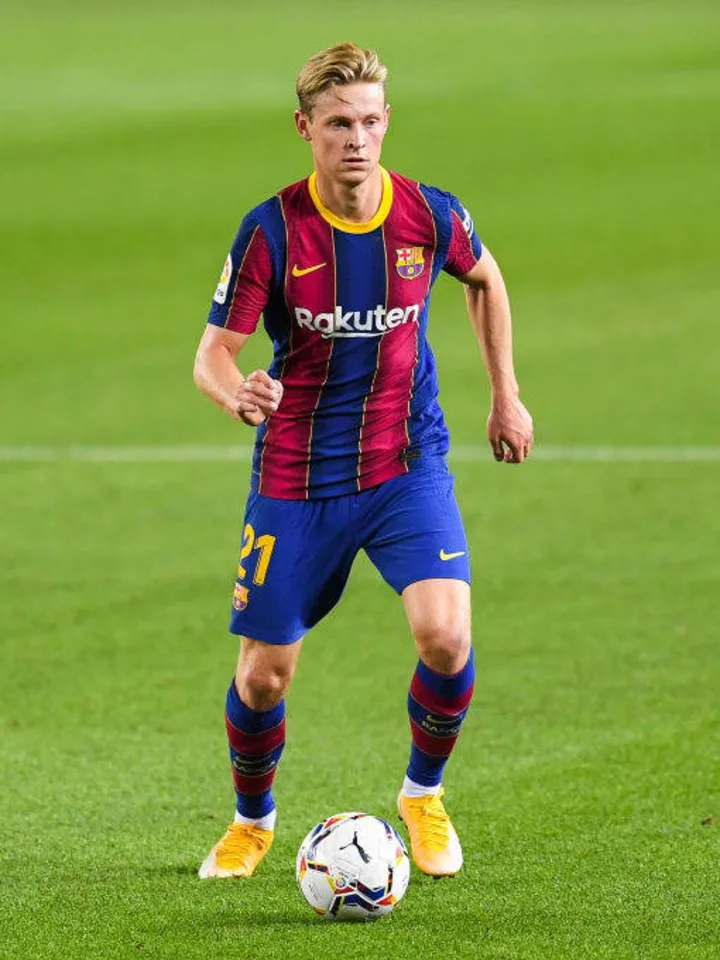
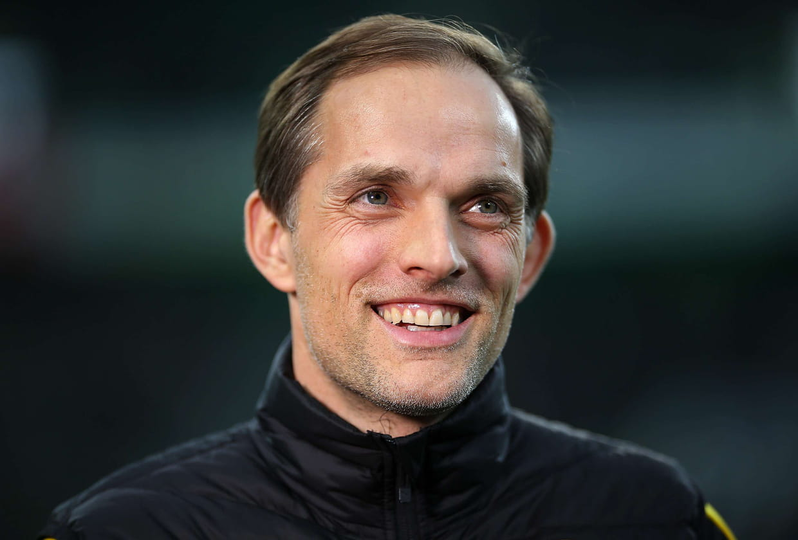

bienvenida
Hola, Bienvenidos a MataCenteno tu sitio web del fútbol
mundial.
Espero que tu visita a ésta plataforma sea de lo más
placentera y
quiero que sepas que siempre seras bienvenido

Noticias
De jong acusa a la prensa de mentirosos
Batalla por el ticket extra para la Champions 24/25
Tuchel dejara el Bayern Munich a final de temporada

Dani Alves podria cumplir condena de 4 a 12 años de prision


Partidos para la semana del 13 y 14/02/2024 y
semana del 20 y 21/02/2024
Resultados de partidos de ida del Martes 13/02:
- RB Leipzig 0 vs Real Madrid CF 1
- FC Copenhague 1 vs Manchester City FC 3
Resultados de los partidos de ida del Miercoles 14/02:
- Lazio 1 vs Bayern Munich 0
- PSG FC 2 vs Real Sociedad 0
Resultados de los partidos de ida de octavos del martes 20/02/2024:
- PSV Eindhoven 1 vs Borussia Dortmund 1
- Inter Milan 1 vs Atletico de Madrid 0
Resultados de los partidos de ida de octavos del miercoles 21/02/2024:
- SSC Napoles 1 vs FC Barcelona 1
- FC Oporto 1 vs Arsenal 0
Partido de Champions del martes 20/02:
Inter de Milan vs Atletico de Madrid, partido de ida de octavos de la
Champions que se jugo este martes 20 por la tarde y que los jugadores
vivieron con mucha intensidad. Debo de decir que me alegro de haber
visto este partido, ya que los italianos mostraron una riqueza tactica
impresionante, de verdad que hay que quitarse el sombrero con Simone
Inzagui por lo que viene haciendo en el Inter.
Bueno los neroazzurro dominaron el encuentro con una dinamica muy
bonita, haciendo un solo toque de balon rapido y poblaban el area
rival con muchos jugadores entre ellos Bastoni, central que en este
partido lo hemos visto como si fuera un lateral/extremo llegando a la
linea final, y el Atletico que no salia de ese dominio.
Thuram hizo un buen partido pero se lesiono y en su lugar entro Arnautovich
que se vistio de heroe y villano, ya que fue el autor del gol pero perdio
muchas oportunidades de gol, incluso erro un disparo estando frente al
arco, se les estaba acabando la paciencia a la aficion italiana.
Lautaro y Barella tuvieron un destacado partido asistiendo a sus
compañeros. En el Atletico destacaron el lateral Lino que llego al area
con peligro y tambien es de señalar la actuacion de Witsel que en este
partido fue la sombra de Lautaro.
Lamentablemente para los interistas solo metieron un gol y el proximo
partido es en el Wanda Metropolitano, donde los de Simeone se hacen fuertes

Partido de Champions del miercoles 21/02/2024:
El dia de hoy, miercoles 21/02 se jugo el Napoles vs Barcelona y les puedo
decir que dejo mucho que desear, en el papel este tenia que haber sido el
mejor partido de Champions de octavos de esta semana y estuvo muy lejos de
serlo. Comienza el partido y el primer tiempo fue algo aburrido, ya que un
Barcelona con pocas ideas en ataque y un Napoles sumiso y que no presionaba
la salida del rival. Ya en el segundo tiempo, mejoraron un poco las cosas:
El Barcelona se iba al ataque y con un pase de Pedri, Lewandowski anota el
primer gol del encuentro para el equipo catalan; pero el Napoles no se quedo
atras y con algunos cambios de jugadores en el medio campo llegaron al empate
por medio de las piernas de Ohsimen que despues de un pase de Anguisa dispara
con direccion a la esquina de la arqueria rival y anota. El Napoles entro en
confianza y con la juventud en el medio campo de Traore y en la delantera con
Gio Simeone trataban de irse arriba en el marcador pero no fue suficiente.
El Barcelona termino el partido viniendose a menos y un Napoles con entusiasmo

Europa League

En este mes de febrero se jugaran los partidos de play offs, donde
se enfrentaran los 8 equipos que quedaron de subcampeones de cada
grupo de la fase de grupos de esta competicion contra los 8
equipos que quedaron terceros en la fase de grupos de la Champions
de esta temporada
Como goleador de la competicion tenemos a Joao Pedro del Brighton
con 6 goles y como mejor asistidor a Kostas Fortounis del Olympiakos
con 6 asistencias
Los resultados de los partidos de ida de Play Offs de este jueves 15/02 son los siguientes:
- FC Shakhtar Donetsk 2 vs Olympique Marsella 2
- Young Boys 1 vs Sporting Portugal 3
- Galatasary SK 3 vs AC Sparta Praga 2
- Feyenoord Rotterdam 1 vs AS Roma 1
- SC Braga 2 vs Qarabag FK 4
- AC Milan 3 vs FC Stade Rennes 0
- RC Lens 0 vs SC Friburgo 0
- Benfica 2 vs Toulouse FC 1
Resultados de los partidos de Playoffs del jueves 22/02
- Qarabag FK 2 vs SC Braga 3
- SC Friburgo 3 vs RC Lens 2
- Toulouse FC 0 vs Benfica 0
- FC Stade Rennes 3 vs AC Milan 2
- Olympique Marsella 3 vs FC Shakhtar Donetsk 1
- Sporting Portugal 1 vs Young Boys 1
- AC Sparta Praga 4 vs Galatasary SK 1
- AS Roma 1 (4) vs Feyenoord Rotterdam 1 (2)
Total de equipos que van a octavos en la Europa League:
- Westham, Brighton, Rangers, Atalanta, Liverpool, Villarreal, Slavia Praga, Bayern Leverkusen
- Milan, Friburgo, Benfica, Qarabaq, Marsella, Sporting CP, Sparta de Praga, Roma
Fecha de sorteo de los octavos de final de la Europa League:
El sorteo para octavos de final de esta temporada sera este viernes 23/02 en Suiza
aproximadamente a las 7:00 de la mañana hora venezolana
Opinion
Liverpool vs Chelsea, final de la Qarabao Cup o tambien llamada copa de la liga inglesa
El partido es para el recuerdo, ya que tuvo buenas jugadas y goles anulados. En el
primer tiempo, los reds dominaron el encuentro y el Chelsea se defendia y salia de
contragolpe. Las dos escuadras tuvieron sus ocasiones y Sterling, jugador del Chelsea
anoto un gol que fue anulado. Luego en el segundo tiempo la tonica del encuentro fue
la misma, solo que ahora era al Liverpool a quien le anulaban el gol, un cabesazo de
Virgil Van Dijk y anulado por posicion adelantada de un compañero de equipo. Lo que
hay que señalar es que los dos arqueros estuvieron muy bien con atajadas impresionantes
sobre todo el portero del Liverpool, Kelleher, que salvo al equipo red en mas de una
ocasion. Se termino el segundo tiempo e iban a tiempo extra, donde en el segundo tiempo
faltando poco para los penales, con un tiro de esquina cobrado por tsimikas, Van Dijk
dijo que si al gol y por un cabesazo suyo los de Liverpool ganaban el encuentro y asi
fue. Liverpool campeon de la copa Qarabaq de 23/24. Impresionante ya que el Liverpool
estaba jugando con suplentes jovenes que no tenian tanta experiencia como los del Chelsea
Preolimpico 2024
Tabla de posiciones
- Paraguay 7 ptos
- Argentina 5 ptos
- Brasil 3 ptos
- Venezuela 1 pto
Resultados de los partidos del lunes 05/02/2024:
- Argentina 2 Venezuela 2
- Paraguay 1 Brasil 0
Resultados de los partidos del Jueves 08/02/2024:
- Argentina 3 Paraguay 3
- Venezuela 1 Brasil 2
Resultados de los partidos del Domingo 11/02/2024:
- Argentina 1 vs Brasil 0
- Venezuela 0 vs Paraguay 2
Campeon: Paraguay Segundo lugar: Argentina Estos son los clasificados a Paris 2024. Les deseamos la mejor de la suerte
Partido Venezuela 0 vs Paraguay 2 Domingo 11/02/2024
Venezuela comenzó con buen pie el partido, ya que por un rebote que dio el
portero de Paraguay, aprovechado con un cabesazo a las redes por el Pipa
Vivas, la seleccion Vinotinto se iba arriba con marcador 1 a 0, pero el
VAR anulo el gol.
Paraguay tenia el dominio del balon y atacaba a placer, para que al minuto
48 de penal, el pichichi del torneo, Diego Gomez, metiera un gol y
Paraguay ganaba 1 a 0 a Venezuela.
Luego a los 75 el delantero Marcelo Perez de Paraguay, anoto el segundo
y ultimo gol del encuentro. Venezuela intento en ocasiones pero no pudo
concretar.
Por otro lado, Argentina le gano a Brasil 1 a 0, quedando como segundo
clasificado para Paris 2024. Como campeon del Preolimpico quedo
Paraguay y el pichichi del torneo es Diego Gomez de Paraguay y actual
compañero de Messi en el Inter Miami.
Pienso que la seleccion paraguaya es justa campeona ya que obtuvo dos
triunfos y un empate y demostro tener un dominio de los partidos
excelente. Lamentablemente la seleccion Vinotinto no clasifico a las
olimpiadas pero quiero expresar mi orgullo como venezolano y fanatico
del futbol que soy, que Venezuela tiene seleccion para rato y con estos
jugadores sumandose a la absoluta, creo que tenemos bastantes chances
en los proximos compromisos
Partidos
Partidos del viernes 01/03/2024
Hora 15:30 hora venezolana: friburgo vs Bayern Munich
Hora 15:45 hora venezolana: Lazio vs Milan
Hora 16:00 hora venezolana: AS Monaco vs PSG
Hora 19:00 hora venezolana: Monagas vs Estudiantes de Merida
Hora 16:00 hora venezolana:Metropolitanos vs Carabobo
Partidos del Sabado 02/03/2024
Hora 11:00 hora venezolana: Brentfor FC vs Chelsea
Hora 11:00 hora venezolana: Everton vs West ham United
Hora 11:00 hora venezolana: FC Fulham vs Brighton & Hove Albion
Hora 11:00 hora venezolana: Newcastle United vs Wolverhampton Wanderers
Hora 11:00 hora venezolana: Nottingham Forest vs Liverpool
Hora 11:00 hora venezolana: Tottenham Hotspur vs Crystal Palace
Hora 13:30 hora venezolana: Luton Town vs Aston Villa
Hora 9:00 hora venezolana: Sevilla vs Real Sociedad
Hora 16:00 hora venezolana: Valencia vs Real Madrid
Hora 13:00 hora venezolana: AC Monza vs AS Roma
Hora 15:45 hora venezolana: Torino vs Fiorentina
Hora 10:30 hora venezolana: Union Berlin vs Borussia Dortmund
Hora 13:30 hora venezolana: Wolfsburgo vs Stuttgart
Hora 15:00 hora venezolana: UCV vs Zamora
Hora 17:45 hora venezolana: Angostura vs Portuguesa
Hora 20:30 hora venezolana: Inter vs Dep. La Guaira
Partidos del Domingo 03/03/2024
Hora 11:30 hora venezolana: Manchester City vs Manchester United
Hora 11:15 hora venezolana: Atletico de Madrid vs Real Betis
Hora 13:30 hora venezolana: Mallorca vs Girona
Hora 16:00 hora venezolana: Athletic Club vs FC Barcelona
Hora 15:45 hora venezolana: Napoli vs Juventus
Hora 10:30 hora venezolana: Koln vs Bayern Leverkusen
Hora 15:45 hora venezolana: Olympique Lyonnais vs Lens
Hora 16:00 hora venezolana: Caracas vs Deportivo Tachira
Hora 19:00 hora venezolana: Academia Puerto Cabello vs Rayo Zuliano
Partidos del lunes 04/03/2024
Hora 15:45 hora venezolana: Inter de Milan vs Genova
Hora 16:00 hora venezolana: Sheffield United FC vs FC Arsenal
Partidos del martes 27/02/2024
Hora 15:45 hora venezolana: Blackburn Rovers vs Newcastle United
Hora 16:00 hora venezolana: Luton town vs Manchester City
Hora 18:00 hora venezolana: Palestino vs Portuguesa
Hora 16:30 hora venezolana: Real Sociedad vs Mallorca
Hora 15:45 hora venezolana: Olympique Lyonnais vs Estrasburgo
Partidos del miercoles 28/02/2024
Hora 13:00 hora venezolana: Sassuolo vs Napoli
Hora 15:45 hora venezolana: Inter de Milan vs Atalanta
Hora 15:30 hora venezolana: Chelsea vs Leeds United
Hora 15:45 hora venezolana: Wolverhampton Wanderers vs Brighton & Hove Albion FC
Hora 15:45 hora venezolana: Nottingham Forest vs Manchester United
Hora 16:00 hora venezolana: Liverpool vs Southampton
Hora 18:00 hora venezolana: Club Nacional de Football vs Academia Puerto Cabello
Partidos del jueves 29/02/2024
Hora 20:30 hora venezolana: Fluminense vs LDU Quito
Hora 16:30 hora venezolana: Athletic Club vs Atletico de Madrid
Futbolistas del ayer
George Best, nacido en Belfast, Irlanda del Norte, el 22 de mayo de 1946. Ha sido uno de
los mejores jugadores que han pasado por el Manchester United, jugando para este club por
11 temporadas, formando un tridente muy efectivo en la delantera con Denis Law y Bobby
Chartton. Best jugaba como extremo derecho y mediapunta. En el United gano una copa de
Europa, dos Football League First Division, un Balon de Oro, un premio FWA a mejor
futbolista del año entre otros premios.
Despues de jugar en el Manchester, milito por clubes de Irlanda, Escocia, Estados Unidos
y volvio a Inglaterra. Con la seleccion de su pais, jugo 37 partidos y anoto 9 goles y
no tuvo participacion en copas internacionales ya que la seleccion de Irlanda del Norte
no clasificaba.
En 1998, tras culminar su carrera como jugador, fue colaborador del programa Soccer
Saturday de la cadena Sky Sports hasta el 2004, año en donde fue fichado por el
Portsmouth FC para ser entrenador de las divisiones inferiores.
Para el 2005 fallece como resultado de una infeccion pulmonar y trastorno multiorganico
debido a que la vida de Best estuvo llena de muchos excesos con el alcohol.
Por siempre sera recordado por formar parte del equipo del United en ganar la primera
copa de Europa, hoy llamada Champions League para el United y sera recordado por sus
regates y de como los aficionados les gustaba verlo jugar